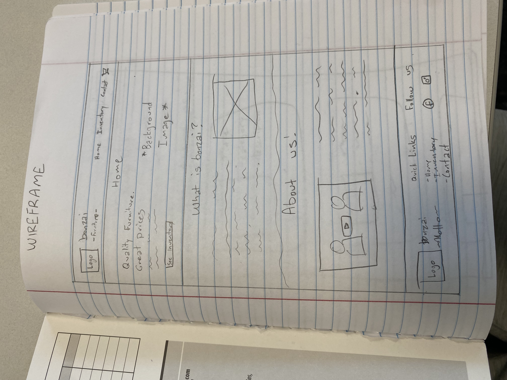
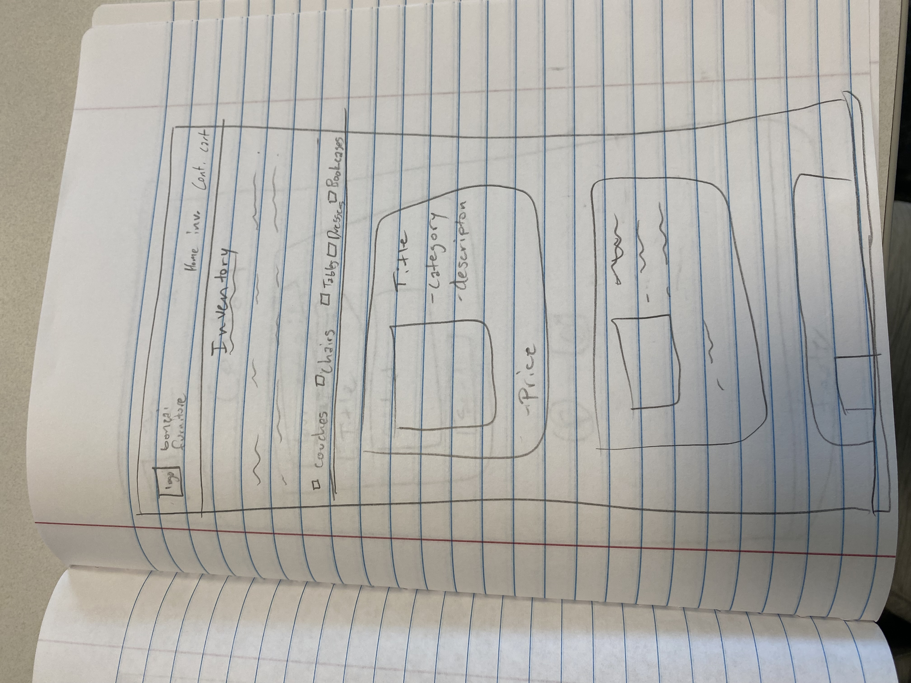
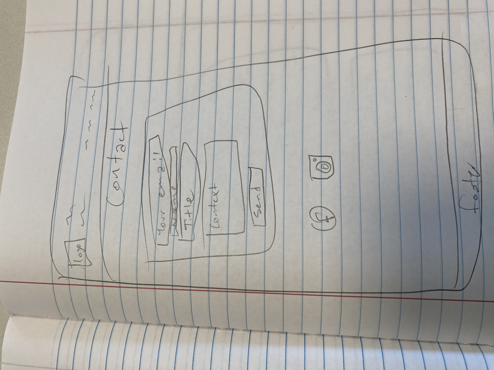
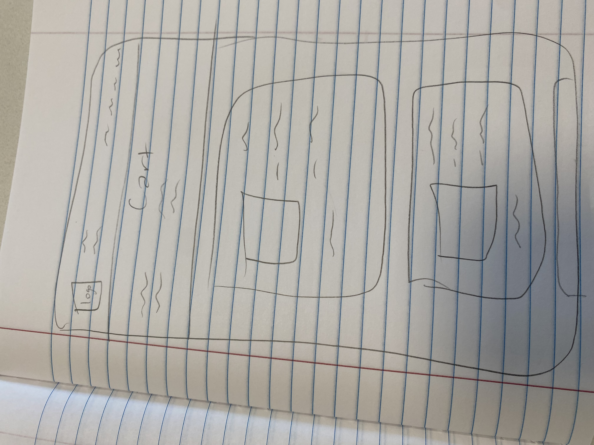

Overview
Purpose
The purpose will be to have a website for my furniture flipping business to provide even easier accessibility to the products we have and so that we can network better. Having a website will allow us to put that on business cards to allow possible customers to see our inventory.
Audience
The main audience will be potential customers. I am making it so that they can have an easier time seeing everything. The only other people that would really see it might be family/friends who want to see our progress.
Dynamic elements
I will have cards for the specific furniture items we have. That will make it easier to add / delete items. I also want to add a filter system where there are checkboxes with the different categories (eg. couches, chairs, dressers, tables etc.) and that will be possible by looking at the category part of each card.
Branding
Website Logo
Style Guide
Color Palette
Palette URL: https://coolors.co/ffffff-4e5438-6a7450-f8efe8-2e2e2e| Primary | Secondary | Accent 1 | Accent 2 |
|---|---|---|---|
| [#F8EFE8] | [#4E5438] | [#6A7450] | [#2E2E2E] |
Pseudocode for your project
For each will go through the list of items we have and display them. When the user clicks checkbox: an event lister will be witing for that and then will sort through the list of of items and display the items in that category.
Wireframes
Create wireframes for your project page(s). One for each page and list them here.
Home page
I would like to add some personal background about me or the other co-owner of the company

Inventory Page
It will show all of the furniture items currently in stock. This will be dynamic.

Contact Page
This will mainly be to get in contact with us.

Cart Page
Functionaly will be very similar to the inventory page, just with te items the user saves. This might not actually happen until further down the road, I haven't decided yet.
